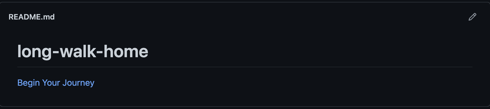

This project is about a long walk home, where you'll make decisions on the route you go. Ironically this project has very few files for a long walk but enough for you to try them all. The most difficult part of this project was linking each file without confusing the outcome, while allowing the story to make sense.